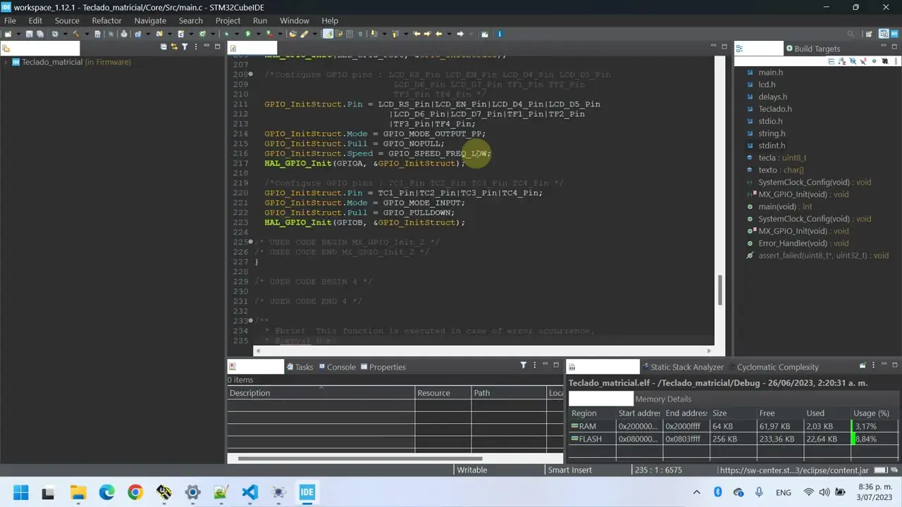

Ve a Window → Preferences → Appearance.
Fase 1
Cambiar el tema
En Theme cambia Light por Dark y pulsa Apply and Close. Para volver al original usa Restore Defaults.
Algunas partes cambian del todo solo después de reiniciar el programa.
Tip rápido para quienes prefieren programar con fondo oscuro: en las preferencias de apariencia de STM32CubeIDE se cambia el tema de Light a Dark.

Ve a Window → Preferences → Appearance.
En Theme cambia Light por Dark y pulsa Apply and Close. Para volver al original usa Restore Defaults.
Algunas partes cambian del todo solo después de reiniciar el programa.